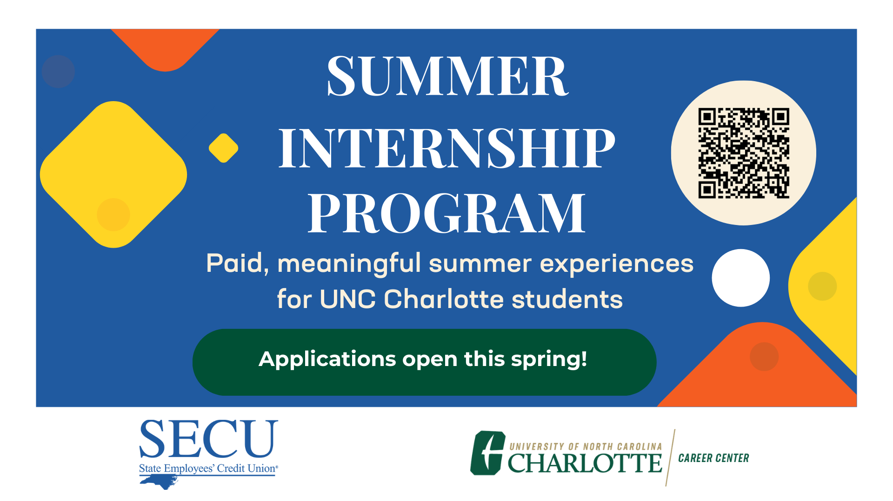
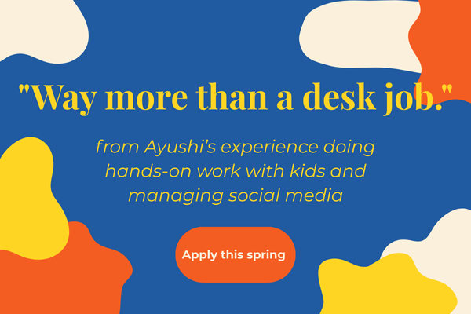
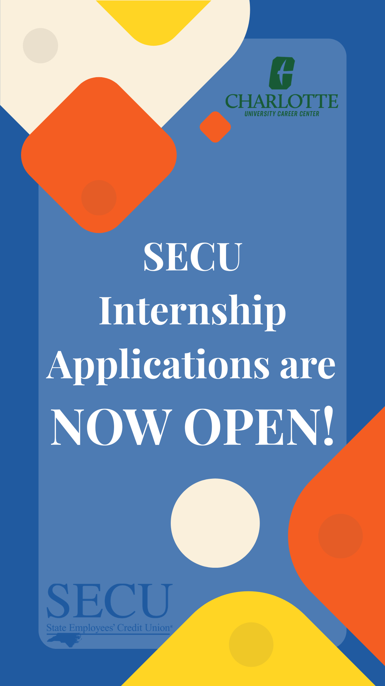
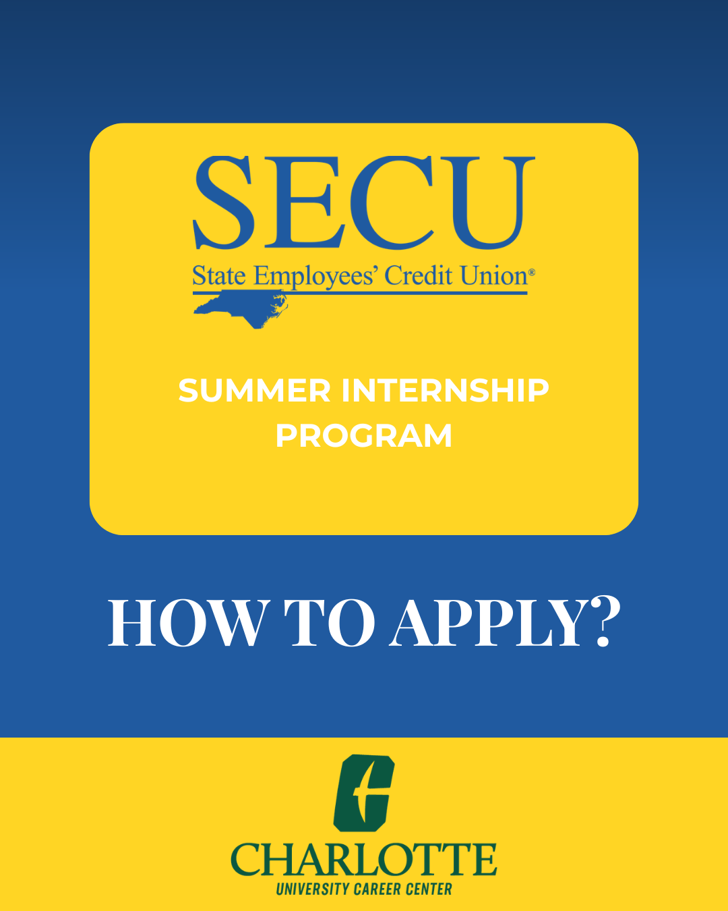
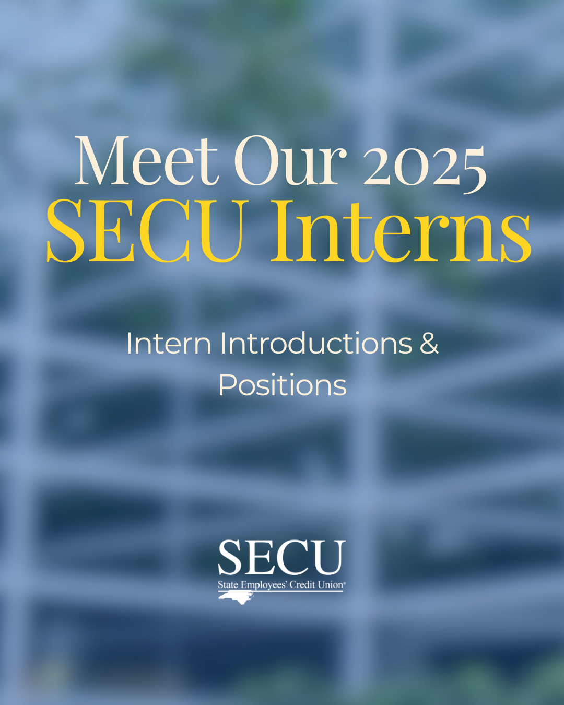
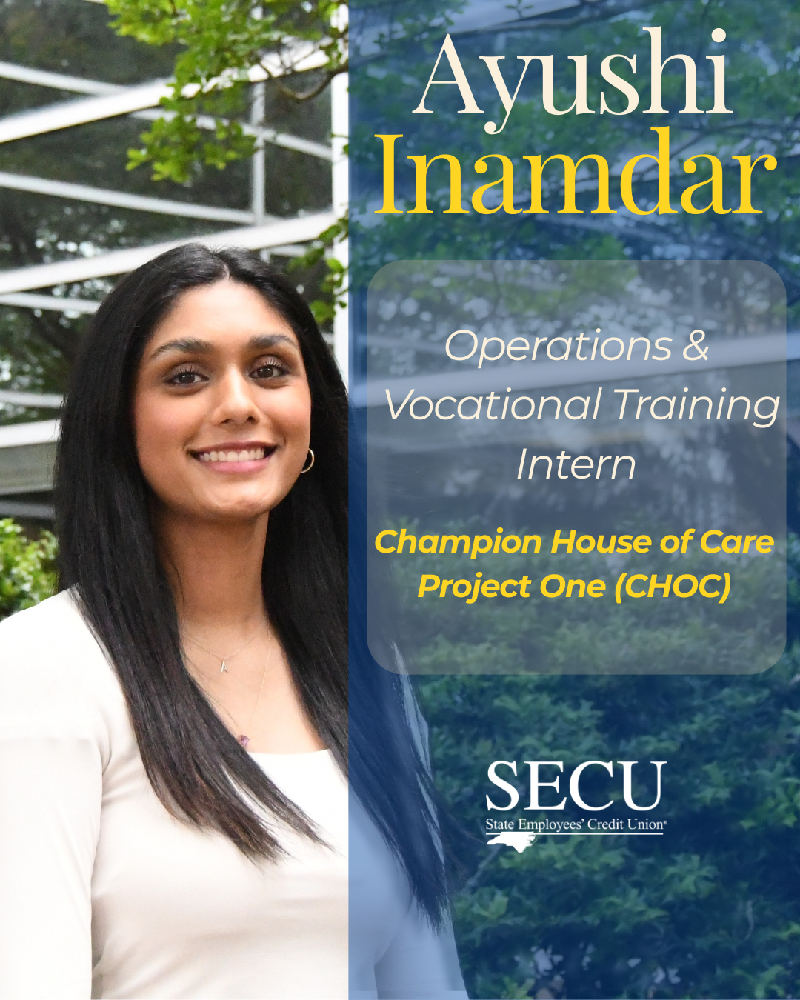

Get it on students’ radar
Lead with paid experience, local impact, and who could apply.
Integrated recruitment campaign
I planned and created a two-part recruitment campaign for the SECU Public Fellows Internship Program at UNC Charlotte.
01
The program gives students paid, local work experience with community organizations and businesses. My job was to make that opportunity easy to understand and get it in front of students before the application deadline.
I planned the campaign and created the pieces for social media, email, campus screens, and print. Each format had a different job, so I adjusted the amount of information instead of pasting the same message everywhere.
02
I split the work into two phases. First, introduce the program and its benefits. Then, as the deadline got closer, make the next step obvious and show what the internship was actually like through current fellows.
Lead with paid experience, local impact, and who could apply.
Focus on the deadline and give students clear application steps.
Use intern profiles and day-in-the-life reels instead of only describing the program.
03
The flyer could hold the full story. The campus screen needed to make sense in a few seconds. The email graphic needed to feel connected to both. I kept the look consistent while changing the amount of information for each placement.



04
Closer to the deadline, I stopped explaining as much and focused on action. The story, feed post, and quarter card all made the deadline and application steps easier to find.



05
I paired intern profiles with short day-in-the-life videos. I wanted students to see the actual people, roles, and workplaces behind the program—not just another internship announcement.



06
I don’t have the final application numbers for this campaign, so I’m not going to claim a result I can’t prove. What I can show is how I carried one idea across several channels while giving each piece a clear purpose.
I’d use separate tracked links and QR codes for each channel, then compare application starts with completed applications. That would show which placements were doing the most work and where students may have dropped off.